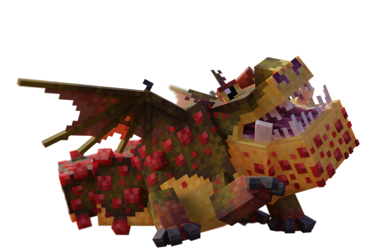
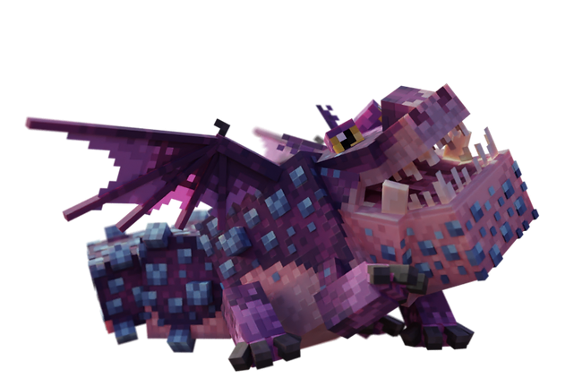
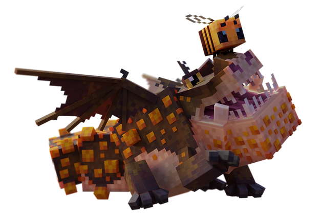
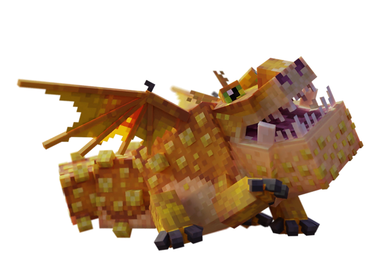
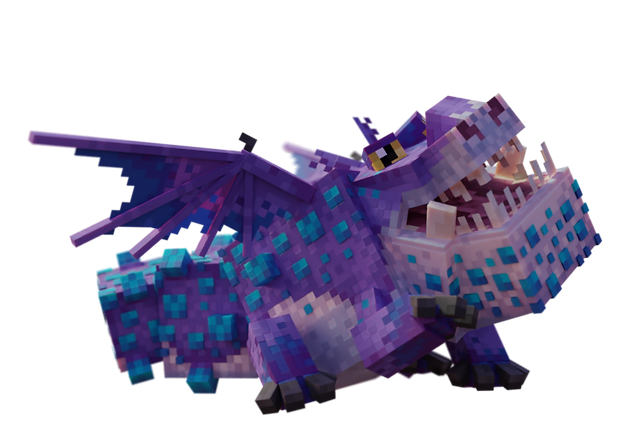
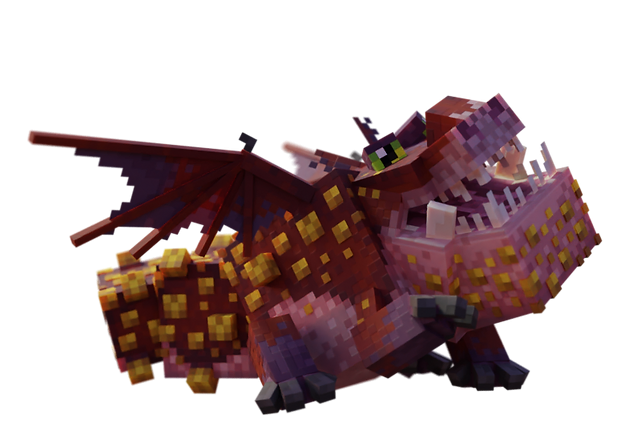
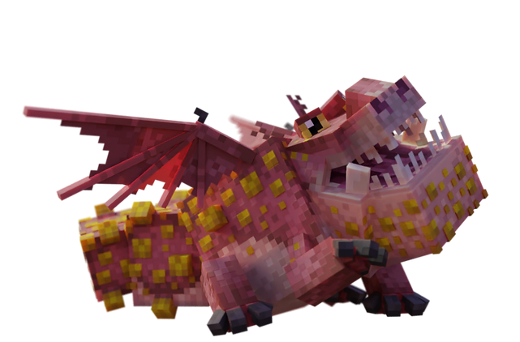
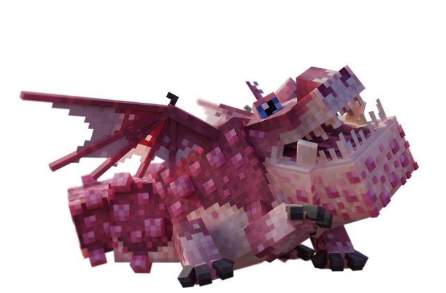
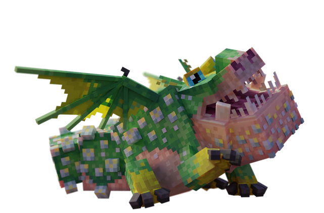

Gronckle
le mâcheur de pierreDescription
§ 1Trapu, lent en vol, mais blindé. Le plus d'armure du codex (10).
Mâche granite, diorite, deepslate ou pierre pour produire du Fer de Gronckle brut — ingrédient nécessaire pour le filtre d'amour, le dragon staff et tout l'outillage Gronckle Iron.
Sa lenteur en vol (0.08, la plus basse du codex) en fait un transporteur lourd plutôt qu'un dragon de combat aérien. Au sol, sa charge frontale (Ram) compense.
Capacités
§ 2Magma Bolt
Projectile parabolique (LavaBlob) — boule de roche fondue. Casse les blocs si mobGriefing activé (S34 fix : son et particules toujours joués même si !mobGriefing).
Ram — Charge Frontale
Charge à pleine vitesse en ligne droite. Force de bélier, l'épaisseur d'un mur.
Apprivoisement
§ 3Tier II — La main tendue.
Nourriture : Bœuf (cuit ou cru).
Conditions : Aucune armure ni arme équipée.
- Trouve un Gronckle (commun en plaines et savanes).
- Retire armure et arme.
- Tiens du bœuf en main, clic droit.
- Au seuil, 1 chance sur 7 par interaction.
Reproduction
§ 4Attention : les œufs de Gronckle explosent à l'éclosion (rayon 3 blocs, feu). Place-les loin de tes constructions inflammables.
Habitat (3 groupes)
§ 5
A. Snowy Plains, Swamps, Meadows.
B. Old Growth Birch Forests, Savanna Plateaus.
C. Plains, Groves, Sunflower Plains, Savannas.
Variantes (10)
§ 6
Variant 1
Hjarta
Tons de cœur

Variant 2
Junior Tuffnut Junior
Référence comique au film

Variant 3
Gronckle
Forme commune

Variant 4
Cheesemonger
Tons fromage affiné

Variant 5
Exiled
Marbré exilé

Variant 6
Rubblegrubber
Tons de gravier

Variant 7
Barn
Couleurs grange rustique

Variant 8
Crumble
Tons d'effritement

Variant 9
Yawnckle
Variante somnolente

Variant 0
Meatlug
Référence à Fishlegs — case 0, forme par défaut
Trivia
§ 7- Plus haute armure du codex (10) — équivalent net-armure +5.
- Mâche granite, diorite, deepslate, ou stone → produit du Raw Gronckle Iron (clé du filtre d'amour).
- Œufs explosifs à l'éclosion : feu, rayon 3 blocs.
- Vitesse en vol = 0.08, la plus lente du codex.
- Variante Meatlug : référence directe au film, dragon de Fishlegs.
Commande /summon
§ 8/summon isleofberk:gronckle ~ ~ ~ {variant:3}
Variantes 1 à 9. Meatlug (variant 0) : case 0, forme par défaut. La variant 3 est la forme commune.